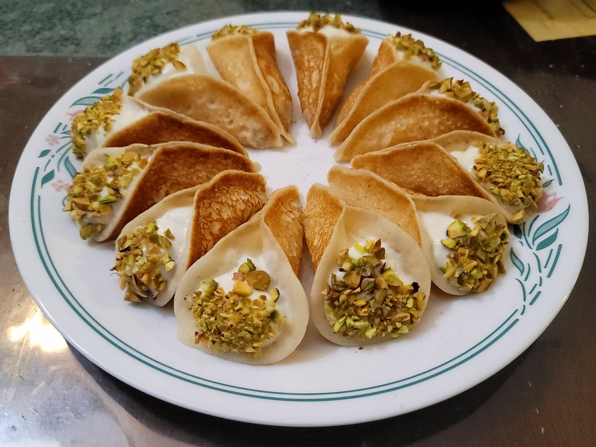

Qatayef Asafiri

Ingredients:
Syrup:
- 1/2 cup Sugar
- 1/4 cup Water
- Optional: 1 tbsp Lemon juice
- 1 tsp Orange blossom water AND/OR Rose water
Batter:
- 1 cup (120 g) Flour
- 1 cup (175 g) Fine semolina
- 2 tbsp Sugar
- 1 tsp Baking powder
- 1/2 tsp Instant yeast
- 1/4 tsp Salt
- 2 1/2 cups Water, warm
Filling:
- 2 cups Ashta
- 1/4 cup Pistachios, finely chopped
Instructions:
- Prepare the syrup by adding the water, sugar, and lemon juice to a small saucepan. Bring to a boil over medium heat while stirring often. Reduce the heat to low and simmer until thickened to preference, or about 5 minutes. Then stir in the flower water.
- To prepare the batter, combine all of the dry batter ingredients. Then add the water and whisk until combined. Let rest for about 30 minutes.
- In a skillet over medium heat, pour 1 tbsp for a small qatayef or 2 tbsp for a larger qatayef that can be more easily filled. Cook until no longer visibly wet. Do not flip. Transfer to a plate and cover to prevent from drying out. Repeat until the batter is finished.
- Scoop about a teaspoon of the Ashta filling in the middle of the Qatayef. Then pinch the edges together sealing them about two-thirds of the way. Dip the open side into ground pistachios. Alternatively, pinch the qatayefs first, and then fill with ashta using a piping bag. Arrange onto a serving plate.
- Optionally fry the larger qatayefs. Add the filling and seal all way. Deep fry in oil over medium heat for 3 minutes per side. Then transfer to a paper towel lined plate before transfering to a serving plate.
- Drizzle the finished qatayefs with the syrup and serve immediately.